这一篇我们以管理员的视角来看mongodb，作为一名管理员，我们经常接触到的主要有4个方面：
1． 安装部署
2． 状态监控
3． 安全认证
4． 备份和恢复，
下面我们就一点一点的讲解。
一：安装部署
我之前的文章都是采用console程序来承载，不过在生产环境中这并不是最佳实践，谁也不愿意在机器重启后满地找牙似找mongodb，
在mongodb里面提供了一个叫做“服务寄宿”的模式，我想如果大家对wcf比较熟悉的话很容易听懂。好了，我们实践一下，这里我开一下D盘
里面的mongodb。
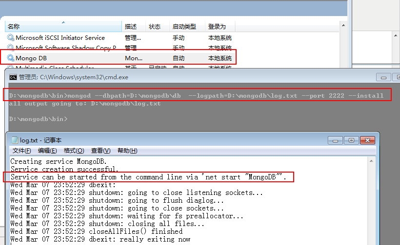
这里要注意的有两点：
<1> logpath: 当我们使用服务寄宿的时候，用眼睛都能想明白肯定不会用console来承载日志信息了。
<2> install: 开启安装服务寄宿，很happy啊，把管理员的手工操作降低到最小，感谢mongodb。
好了，console程序叫我看log日志，那我就看看，发现mongodb已经提示我们如何开启mongodb，接着我照做就是了。
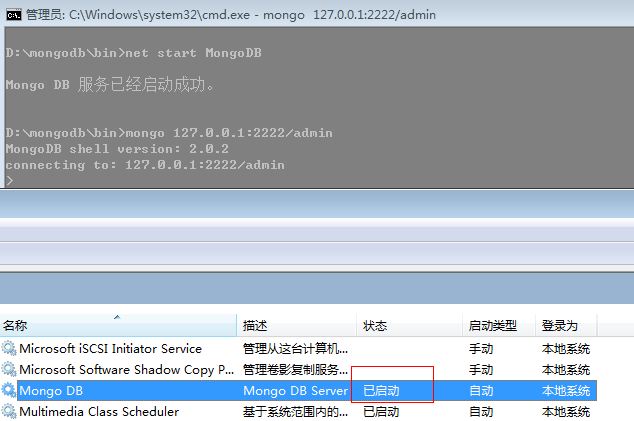
还要提醒大家一点的就是，这些命令参数很多很复杂也就很容易忘，不过没关系，数据库给我们提供了一个help方法，我们可以
拿mongod和mongo说事。
mongod：
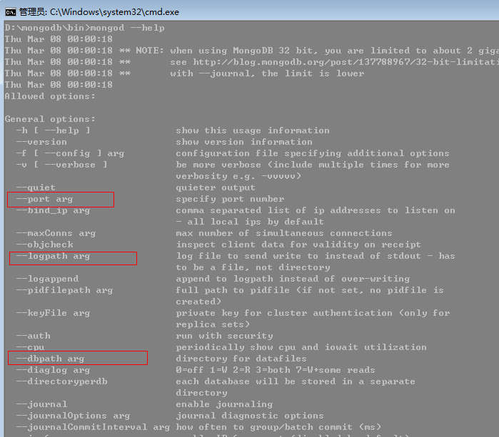
mongo：
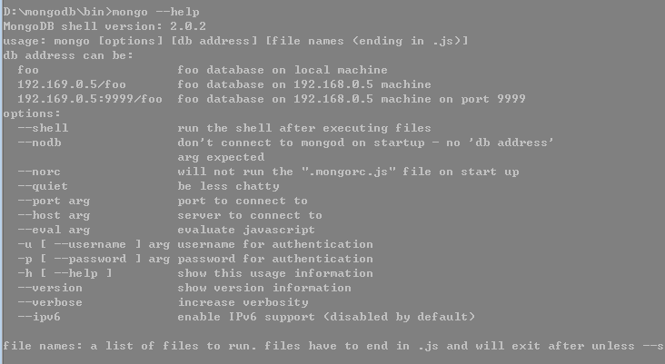
二：状态监控
监控可以让我们实时的了解数据库的健康状况以及性能调优，在mongodb里面给我们提供了三种方式。
1：http监视器
这个我在先前的文章中也提到了，这里就不赘述了。
2：serverStatus()
这个函数可以获取到mongodb的服务器统计信息，其中包括 ：全局锁，索引，用户操作行为等等这些统计信息，对管理员来说非常
重要，具体的参数含义可以参考园友：http://www.cnblogs.com/xuegang/archive/2011/10/13/2210339.html
这里还是截个图混个眼熟。
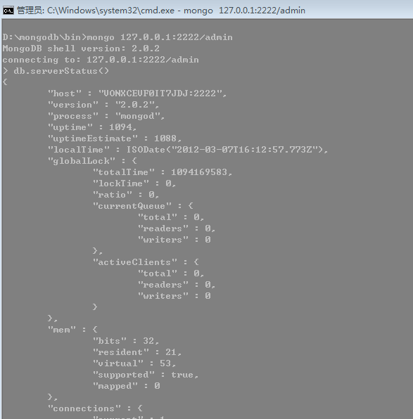
3：mongostat
前面那些统计信息再牛X，那也是静态统计，不能让我观看实时数据变化，还好，mongodb里面提供了这里要说的mongodstat
监视器，这玩意会每秒刷新，在实际生产环境中大有用处，还是截张图，很有意思，是不是感觉大军压境了。
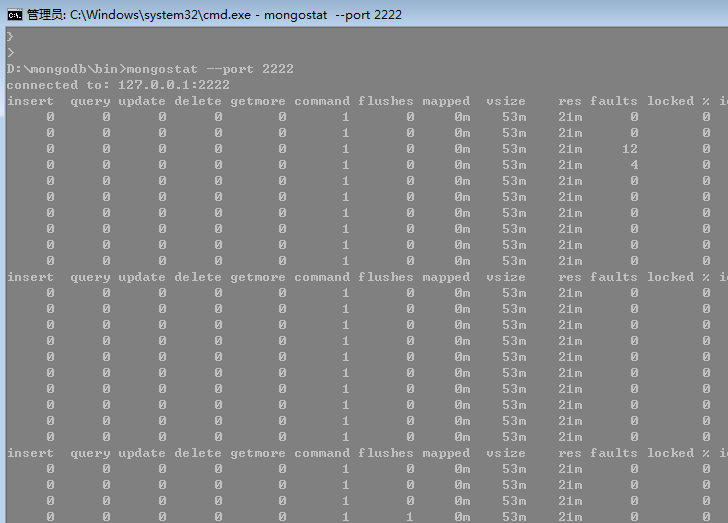
三: 安全认证
作为数据库软件，我们肯定不想谁都可以访问，为了确保数据的安全，mongodb也会像其他的数据库软件一样可以采用用户
验证的方法，那么该怎么做呢？其实很简单，mongodb提供了addUser方法，还有一个注意点就是如果在admin数据库中添加
将会被视为“超级管理员”。
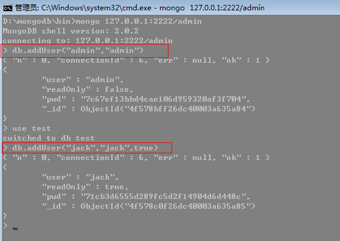
上面的admin用户将会被视为超级管理员，“jack”用户追加的第三个参数表示是否是“只读用户”，好了，该添加的我们都添加了，
我们第一次登录时不是采用验证模式，现在我们使用--reinstall重启服务并以--auth验证模式登录。
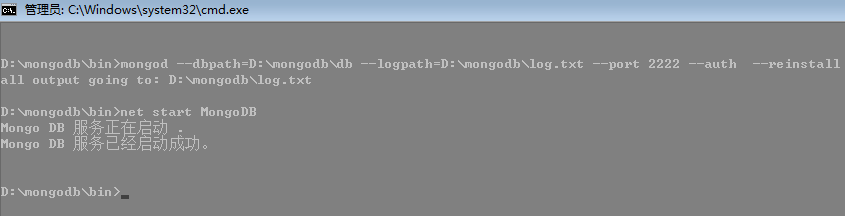
好了，我们进入test集合翻翻数据看看情况，我们发现jack用户始终都是没有写入的权限，不管是授权或者未授权。
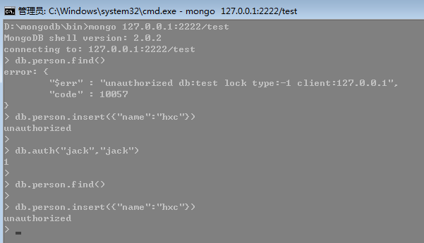
四：备份和恢复
这玩意的重要性我想都不需要我来说了吧，这玩意要是搞不好会死人的,mongodb里面常用的手段有3种。
1： 直接copy
这个算是最简单的了，不过要注意一点，在服务器运行的情况下直接copy是很有风险的，可能copy出来时，数据已经遭到
破坏，唯一能保证的就是要暂时关闭下服务器，copy完后重开。
2：mongodump和mongorestore
这个是mongo给我们提供的内置工具，很好用，能保证在不关闭服务器的情况下copy数据。
为了操作方便，我们先删除授权用户。
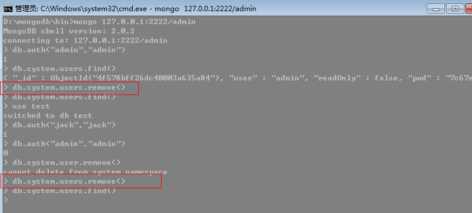
好了，我们转入正题，这里我先在D盘建立一个backup文件夹用于存放test数据库。
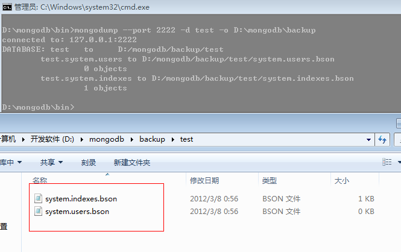
快看，数据已经备份过来了，太爽了，现在我们用mongorestore恢复过去，记住啊，它是不用关闭机器的。
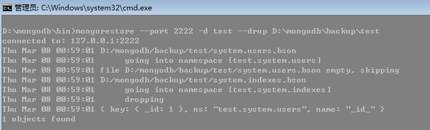
提一点的就是 drop选项，这里是说我将test数据恢复之前先删除原有数据库里面的数据，同样大家可以通过help查看。
3：主从复制
这个我在上上篇有所介绍，这里也不赘述了。
其实上面的1，2两点都不能保证获取数据的实时性，因为我们在备份的时候可能还有数据灌在内存中不出来，那么我们
想说能不能把数据暴力的刷到硬盘上，当然是可以的,mongodb给我们提供了fsync+lock机制就能满足我们提的需求。
fsync+lock首先会把缓冲区数据暴力刷入硬盘，然后给数据库一个写入锁，其他实例的写入操作全部被阻塞，直到fsync
+lock释放锁为止。
这里就不测试了。
加锁： db.runCommand({"fsync":1,"lock":1})
释放锁： db.$cmd.unlock.findOne()